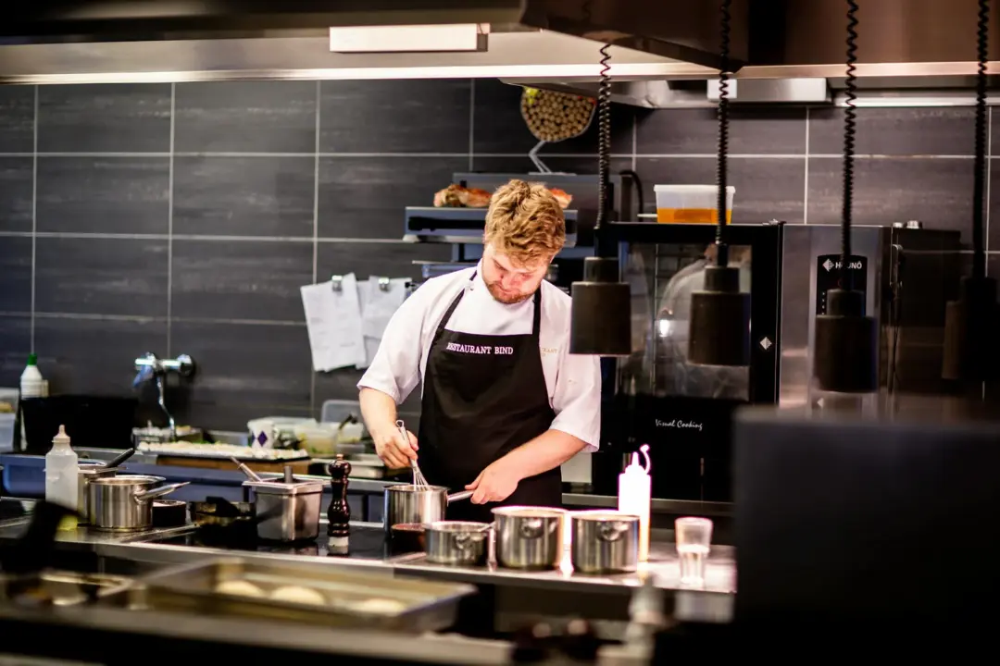

Restauranter i Købehavn
som tilbyder studierabat
Livet som studerende
Livet som studerende kan være hårdt. Mange afleveringer og utallige timer på studiet. Derefter venter et deltidsarbejde, for at få skrabet penge sammen til mad og husleje.
Derfor har vi lavet en samling af restuaranter som tilbyder studierabat, så du kan forkæle dig selv til en fornufting pris.

SU-SPIS for virksomheder
Er du en virksomhed som allerede tilbyder studierabat? Eller ønsker at starte et studierabat tilbud?
Klik på knappen under og udfyld formularen. Vi opretter dig på “Restaurant”-siden så studerende nemmere kan finde din restaurant.